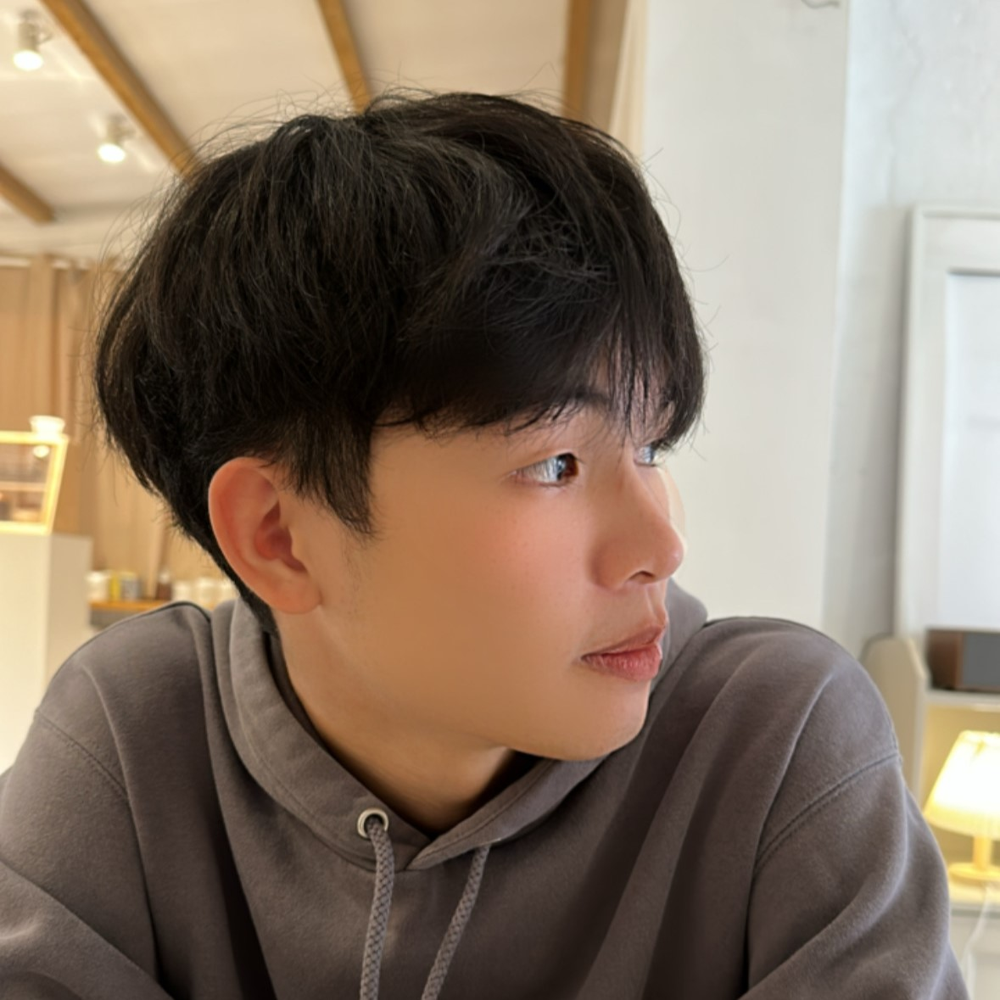

高嘉駿
11144231｜資管四乙
這學期從 HTML、CSS 到 JavaScript 的學習，讓我更清楚了解網頁的結構、樣式和互動是怎麼互相搭配的，也不再只是照範例寫，而是看懂程式碼在做什麼、為什麼要這樣寫。 透過實際操作，我學會了基本的版面配置、互動效果和功能實作，也慢慢開始站在使用者的角度思考畫面和操作流程。 在學習過程中，RWD 版面調整和 JavaScript 除錯是最困難的部分，但也因此學會自己查資料、除錯和找出問題原因。 期末的小組專題則讓我體會到分工合作和溝通的重要性。 這門課不只提升了我的網頁實作能力，也讓我在解決問題和團隊合作方面都有明顯成長。

陳俊宇
11144264｜資管四乙
在這次期末專題裡，我主要負責做登入／註冊、購物車這些介面。 原本我以為就是把頁面做出來、排版弄一弄就好，但實際做下去才發現根本沒那麼簡單，因為這些功能其實會牽到整個使用者的操作流程。 像是登入要放哪些欄位、要怎麼引導使用者註冊，註冊完要不要直接跳回登入，這些看起來小細節，但不先想好，做一做就會亂掉。 所以這次做這些功能，對我來說比較像是在練習「把一整段流程串起來」，不是只做單一頁面。 我要一直去想每個頁面要怎麼接、按鈕怎麼放，讓使用者從登入開始，到選商品、丟進購物車、準備結帳，都可以順順做完，整體看起來也更像一個真的能用的電商網站。
林子庭
11244145｜資管三甲
此次多媒體專案讓我學習到許多新知，也更加確立了我對多媒體設計的興趣。 本次專案中，我主要負責商品總覽頁與商品詳細頁的設計與製作，從版面配置到互動效果的呈現，都讓我對網頁設計流程有更深入的了解。 過程中在排版設計及 JavaScript 程式撰寫上遇到不少困難，但透過參考其他網站的設計方式，以及利用線上教學資源查詢資料，逐步解決問題並完成作品。 透過這次經驗，我不僅提升了技術能力，也學會面對困難時主動學習與調整，獲得相當大的成就感。